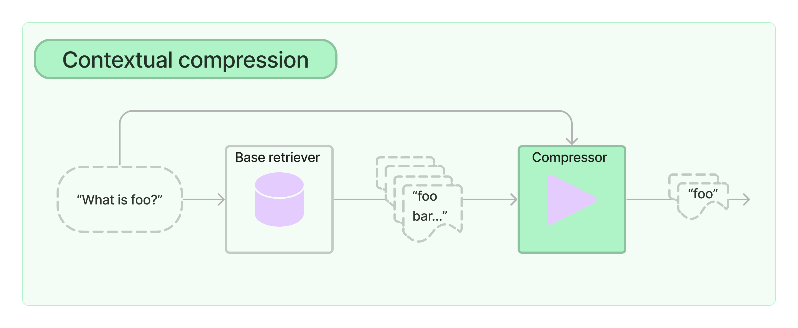

# API 키를 환경변수로 관리하기 위한 설정 파일
from dotenv import load_dotenv
# API 키 정보 로드
load_dotenv()문맥 압축 검색기(ContextualCompressionRetriever)
문맥 압축 검색기(ContextualCompressionRetriever)
검색 시스템에서 직면하는 어려움 중 하나는 데이터를 시스템에 수집할 때 어떤 특정 질의를 처리해야 할지 미리 알 수 없다는 점입니다.
이는 질의와 가장 관련성이 높은 정보가 많은 양의 무관한 텍스트를 포함한 문서에 묻혀 있을 수 있음을 의미합니다.
이러한 전체 문서를 애플리케이션에 전달하면 더 비용이 많이 드는 LLM 호출과 품질이 낮은 응답으로 이어질 수 있습니다.
ContextualCompressionRetriever 은 이 문제를 해결하기 위해 고안되었습니다.
아이디어는 간단합니다. 검색된 문서를 그대로 즉시 반환하는 대신, 주어진 질의의 맥락을 사용하여 문서를 압축함으로써 관련 정보만 반환되도록 할 수 있습니다.
여기서 “압축”은 개별 문서의 내용을 압축하는 것과 문서를 전체적으로 필터링하는 것 모두를 의미합니다.
ContextualCompressionRetriever 는 질의를 base retriever에 전달하고, 초기 문서를 가져와 Document Compressor를 통과시킵니다.
Document Compressor는 문서 목록을 가져와 문서의 내용을 줄이거나 문서를 완전히 삭제하여 목록을 축소합니다.
출처: https://drive.google.com/uc?id=1CtNgWODXZudxAWSRiWgSGEoTNrUFT98v

# LangSmith 추적을 설정합니다. https://smith.langchain.com
# !pip install langchain-teddynote
from langchain_teddynote import logging
# 프로젝트 이름을 입력합니다.
logging.langsmith("CH10-Retriever")# 패키지 업데이트
!pip install -qU langchain-teddynotepretty_print_docs 함수는 문서 리스트를 예쁘게 출력하는 헬퍼 함수입니다.
# 문서를 예쁘게 출력하기 위한 도우미 함수
def pretty_print_docs(docs):
print(
f"\n{'-' * 100}\n".join(
[f"문서 {i+1}:\n\n" + d.page_content for i, d in enumerate(docs)]
)
)기본 Retriever 설정
간단한 벡터 스토어 retriever를 초기화하고 텍스트 문서를 청크 단위로 저장하는 것부터 시작해 보겠습니다.
예시 질문을 던졌을 때, retriever는 관련 있는 문서 1~2개와 관련 없는 문서 몇 개를 반환하는 것을 확인할 수 있습니다.
from langchain_community.document_loaders import TextLoader
from langchain_community.vectorstores import FAISS
from langchain_openai import OpenAIEmbeddings
from langchain_text_splitters import CharacterTextSplitter
# TextLoader를 사용하여 "appendix-keywords.txt" 파일에서 문서를 로드합니다.
loader = TextLoader("./data/appendix-keywords.txt")
# CharacterTextSplitter를 사용하여 문서를 청크 크기 300자와 청크 간 중복 0으로 분할합니다.
text_splitter = CharacterTextSplitter(chunk_size=300, chunk_overlap=0)
texts = loader.load_and_split(text_splitter)
# OpenAIEmbeddings를 사용하여 FAISS 벡터 저장소를 생성하고 검색기로 변환합니다.
retriever = FAISS.from_documents(texts, OpenAIEmbeddings()).as_retriever()
# 쿼리에 질문을 정의하고 관련 문서를 검색합니다.
docs = retriever.invoke("Semantic Search 에 대해서 알려줘.")
# 검색된 문서를 예쁘게 출력합니다.
pretty_print_docs(docs)맥락적 압축(ContextualCompression)
LLMChainExtractor 를 활용하여 생성한 DocumentCompressor 를 retriever 에 적용한 것이 바로 ContextualCompressionRetriever 입니다.
from langchain_teddynote.document_compressors import LLMChainExtractor
from langchain.retrievers import ContextualCompressionRetriever
# from langchain.retrievers.document_compressors import LLMChainExtractor
from langchain_openai import ChatOpenAI
llm = ChatOpenAI(temperature=0, model="gpt-4o-mini") # OpenAI 언어 모델 초기화
# LLM을 사용하여 문서 압축기 생성
compressor = LLMChainExtractor.from_llm(llm)
compression_retriever = ContextualCompressionRetriever(
# 문서 압축기와 리트리버를 사용하여 컨텍스트 압축 리트리버 생성
base_compressor=compressor,
base_retriever=retriever,
)
pretty_print_docs(retriever.invoke("Semantic Search 에 대해서 알려줘."))
print("=========================================================")
print("============== LLMChainExtractor 적용 후 ==================")
compressed_docs = (
compression_retriever.invoke( # 컨텍스트 압축 리트리버를 사용하여 관련 문서 검색
"Semantic Search 에 대해서 알려줘."
)
)
pretty_print_docs(compressed_docs) # 검색된 문서를 예쁘게 출력LLM 을 활용한 문서 필터링
LLMChainFilter
LLMChainFilter는 초기에 검색된 문서 중 어떤 문서를 필터링하고 어떤 문서를 반환할지 결정하기 위해 LLM 체인을 사용하는 보다 단순하지만 강력한 압축기입니다.
이 필터는 문서 내용을 변경(압축)하지 않고 문서를 선택적으로 반환 합니다.
from langchain_teddynote.document_compressors import LLMChainFilter
# LLM을 사용하여 LLMChainFilter 객체를 생성합니다.
_filter = LLMChainFilter.from_llm(llm)
compression_retriever = ContextualCompressionRetriever(
# LLMChainFilter와 retriever를 사용하여 ContextualCompressionRetriever 객체를 생성합니다.
base_compressor=_filter,
base_retriever=retriever,
)
compressed_docs = compression_retriever.invoke(
# 쿼리
"Semantic Search 에 대해서 알려줘."
)
pretty_print_docs(compressed_docs) # 압축된 문서를 예쁘게 출력합니다.EmbeddingsFilter
각각의 검색된 문서에 대해 추가적인 LLM 호출을 수행하는 것은 비용이 많이 들고 속도가 느립니다.
EmbeddingsFilter는 문서와 쿼리를 임베딩하고 쿼리와 충분히 유사한 임베딩을 가진 문서만 반환함으로써 더 저렴하고 빠른 옵션을 제공합니다.
이를 통해 검색 결과의 관련성을 유지하면서도 계산 비용과 시간을 절약할 수 있습니다.
EmbeddingsFilter 와 ContextualCompressionRetriever 를 사용하여 관련 문서를 압축하고 검색하는 과정입니다.
EmbeddingsFilter를 사용하여 지정된 유사도 임계값(0.86) 이상인 문서를 필터링 합니다.
from langchain.retrievers.document_compressors import EmbeddingsFilter
from langchain_openai import OpenAIEmbeddings
embeddings = OpenAIEmbeddings()
# 유사도 임계값이 0.76인 EmbeddingsFilter 객체를 생성합니다.
embeddings_filter = EmbeddingsFilter(embeddings=embeddings, similarity_threshold=0.86)
# 기본 압축기로 embeddings_filter를, 기본 검색기로 retriever를 사용하여 ContextualCompressionRetriever 객체를 생성합니다.
compression_retriever = ContextualCompressionRetriever(
base_compressor=embeddings_filter, base_retriever=retriever
)
# ContextualCompressionRetriever 객체를 사용하여 관련 문서를 검색합니다.
compressed_docs = compression_retriever.invoke(
# 쿼리
"Semantic Search 에 대해서 알려줘."
)
# 압축된 문서를 예쁘게 출력합니다.
pretty_print_docs(compressed_docs)파이프라인 생성(압축기+문서 변환기)
DocumentCompressorPipeline 을 사용하면 여러 compressor를 순차적으로 결합할 수 있습니다.
Compressor와 함께 BaseDocumentTransformer를 파이프라인에 추가할 수 있는데, 이는 맥락적 압축을 수행하지 않고 단순히 문서 집합에 대한 변환을 수행합니다.
예를 들어, TextSplitter는 문서를 더 작은 조각으로 분할하기 위해 document transformer로 사용될 수 있으며, EmbeddingsRedundantFilter는 문서 간의 임베딩 유사성(기본값: 0.95 유사도 이상을 중복 문서로 간주) 을 기반으로 중복 문서를 필터링하는 데 사용될 수 있습니다.
아래에서는 먼저 문서를 더 작은 청크로 분할한 다음, 중복 문서를 제거하고, 쿼리와의 관련성을 기준으로 필터링하여 compressor pipeline을 생성합니다.
from langchain.retrievers.document_compressors import DocumentCompressorPipeline
from langchain_community.document_transformers import EmbeddingsRedundantFilter
from langchain_text_splitters import CharacterTextSplitter
# 문자 기반 텍스트 분할기를 생성하고, 청크 크기를 300으로, 청크 간 중복을 0으로 설정합니다.
splitter = CharacterTextSplitter(chunk_size=300, chunk_overlap=0)
# 임베딩을 사용하여 중복 필터를 생성합니다.
redundant_filter = EmbeddingsRedundantFilter(embeddings=embeddings)
# 임베딩을 사용하여 관련성 필터를 생성하고, 유사도 임계값을 0.86으로 설정합니다.
relevant_filter = EmbeddingsFilter(embeddings=embeddings, similarity_threshold=0.86)
pipeline_compressor = DocumentCompressorPipeline(
# 문서 압축 파이프라인을 생성하고, 분할기, 중복 필터, 관련성 필터, LLMChainExtractor를 변환기로 설정합니다.
transformers=[
splitter,
redundant_filter,
relevant_filter,
LLMChainExtractor.from_llm(llm),
]
)ContextualCompressionRetriever를 초기화하며, base_compressor로 pipeline_compressor를, base_retriever로 retriever를 사용합니다.
compression_retriever = ContextualCompressionRetriever(
# 기본 압축기로 pipeline_compressor를 사용하고, 기본 검색기로 retriever를 사용하여 ContextualCompressionRetriever를 초기화합니다.
base_compressor=pipeline_compressor,
base_retriever=retriever,
)
compressed_docs = compression_retriever.invoke(
# 쿼리
"Semantic Search 에 대해서 알려줘."
)
# 압축된 문서를 예쁘게 출력합니다.
pretty_print_docs(compressed_docs)